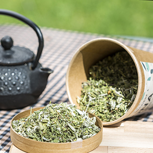
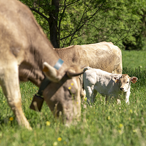
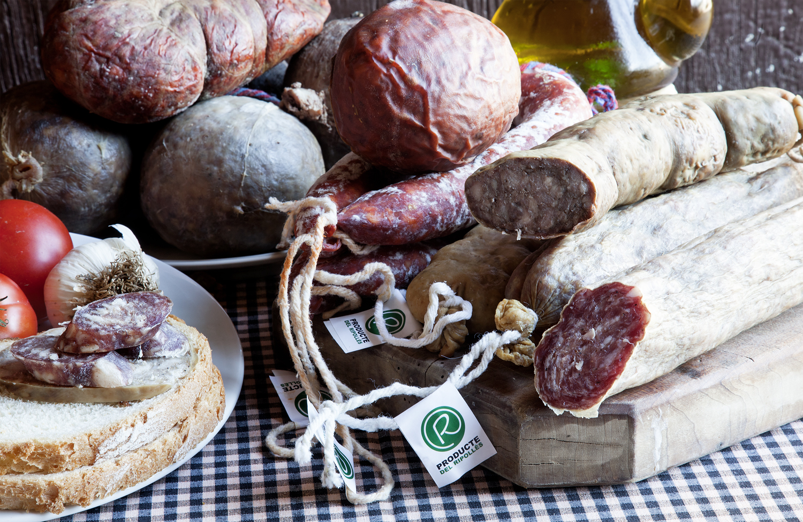
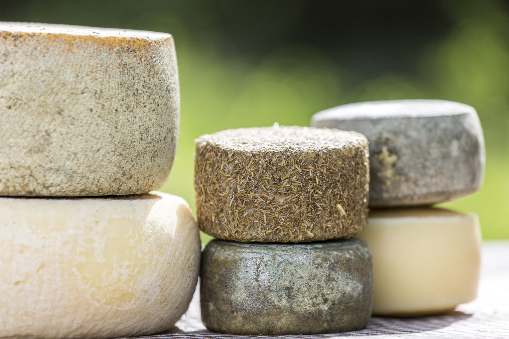
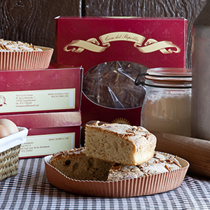
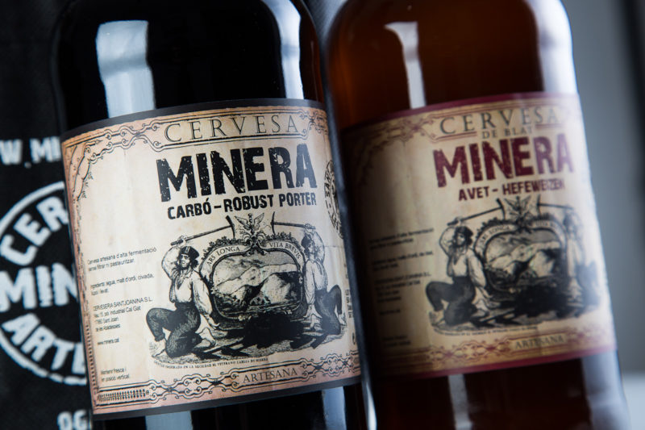
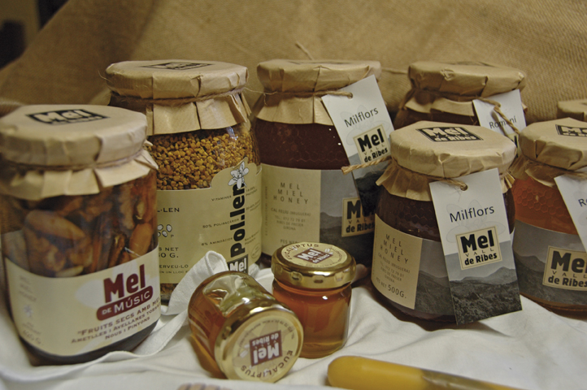
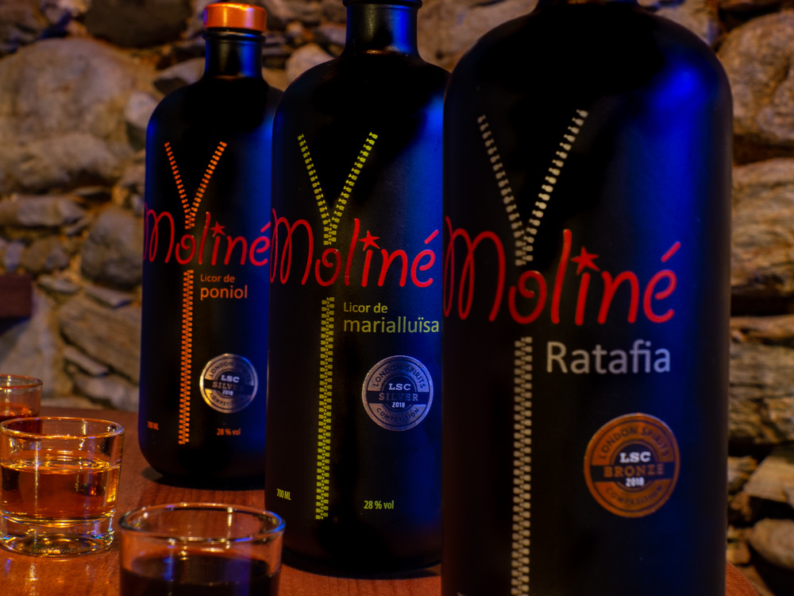

Plenament conscients de la importància que adquireix la restauració en
aquest tipus d'esdeveniments donem màxima prioritat a la qualitat de la
nostra matèria primera, la tradició com a base de les nostres creacions i
elegància en la posada en escena. Una àmplia selecció gastronòmica i
econòmica que permetrà adaptar-se als nostres clients segons l'ocasió

Tot el procés, des de la recol·lecció de les plantes a l’envasat, és fa
de manera manual.

En les carnisseries i obradors associats s’elaboren embotits i
llangonisseta de gran qualitat, elaborats seguint la tradició de
generacions anteriors.

Elaboració tradicional amb molta cura, dedicació i tradició.

Elaborem derivats lactis de manera artesana, a partir de llet de vaca,
de cabra o d’ovella produïda a les explotacions del Ripollès.

La Coca del Ripollès és una coca en format pa de pessic, en un motlle
d'uns 20 cm de diàmetre i d'un gruix d'entre 4 cm i 7 cm. Presenta al
paladar uns tocs de matafaluga i canyella.

De la neu i les aigües que s’escolen per les pendents del Taga i Serra
Cavallera, escolant-se entre els cingles de l’Avellanosa i saltant per
la Bauma dels Bous en fem el nostre tresor més preuat.

Caracteritzada pel seu color ambre més o menys fosc i el seu aroma
intens i persistent, amb gust pronunciat i dolç.

Està elaborada a partir de vint-i-vuit herbes i espècies, amb una base
de crema anisada.